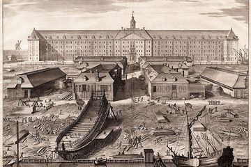

Project ini membahas dampak penjajahan terhadap perkembangan IPTEK di Indonesia. Awalnya, masyarakat Indonesia hanya punya pengetahuan tradisional. Saat bangsa Eropa datang, mereka membawa teknologi modern seperti kapal, senjata, dan sistem pertanian. Pada masa Belanda, dibangun infrastruktur dan diperkenalkan pendidikan, tetapi hanya untuk kepentingan penjajah dan kalangan tertentu. Akibatnya, rakyat banyak yang tetap tertinggal. Memasuki abad ke-20, muncul golongan terpelajar yang mulai menggunakan ilmu untuk melawan penjajahan melalui organisasi seperti Budi Utomo. Setelah merdeka, Indonesia mulai mengembangkan IPTEK sendiri dari dasar yang sudah ada.

Sebelum Penjajahan (sebelum abad 16)
Abad 16-17 (Masuknya Bangsa Eropa)
Abad 18 (Penguatan Kekuasaan Belanda)